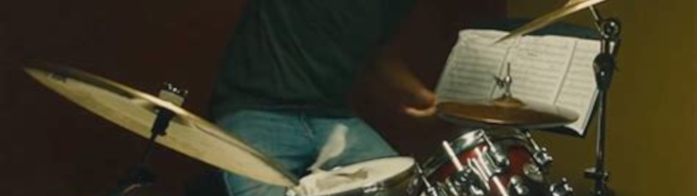

La expresion
Se habla de la expresion artistica como un fenomeno nacido del pensamiento creativo fundamentado en la intencion del artista. Los artistas que han marcado el planeta con su huella rompieron las barreras de la creatividad creando junto a ello un campo de conocimiento que no se habia visto anteriormente. La pasion juega un rol muy importante ya que ella es la que impulsa los jugos de la creatividad por el filtro de la experiencia humana. La responsabilidad para expresar estas ideas recae en nuestras destrezas de representacion.
Andy Warhol, Picasso, Pollock, Michelangelo, todos fueron los padres de un campo del arte y su propio estilo. Ellos lograron comunicar la expresion artistica pura de una forma en la que el resto de la sociedad podia interpretarla. Por lo tanto, se nota muy claramente como ellos se inventaron sus propias destrezas de representacion. Siendo Andy Warhol con sus representaciones de pop, o Pollock con sus cuadros coloridos. Manifestaron la expresion y de ella resulto el metodo de representacion. Cuando se expresan estos artistas, no dejan un mensaje comunicado, dejan la expresion de ellos. Imprimen sus almas en el planeta tierra de cierta manera que critica a la sociedad actual. Una forma de arte nunca mas vista, solo por la expresion de estos artistas.
Los cinco sentidos humanos filtran el mundo al rededor de nosotros y lo simplifican de cierta manera para que el cerebro lo pueda entender. Cuando se hablan de obras de arte como la expresion de un ser humano, es imperativo que la persona expresandose comprenda el intersticio entre la obra y la persona observando. Conlleva un proceso de analisis complejo para poder entender el porque y como de un artista. Para poder empujar tras semejante barrera del arte es importante tener la pasion y las agallas para sobrepasar el obstaculo. La pasion nutre el arte.
El nacer del proceso creativo conlleva el prerequisito de la intencion del artista. Se habla de intencion como el motivo por el cual el artista crea la obra. Sea una critica o una pregunta hacia la sociedad, crea una emocion adentro de las personas cuando experimentan la obra. El artista desencadeno sus emociones en el canvas si las personas lo sintieron como el artista tenia pensado, pues cumplio con su proposito.